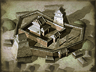

Basic Unit Statistics (can be modified by difficulty level, arts, skills, traits and retainers)
| Recruitment Cost | 610 | |
| Upkeep Cost | 90 | |
| Melee Attack | 3 | 8% |
| Charge Bonus | 8 | 16% |
| Bonus vs Cavalry | 2 | 6% |
| Range | 125 | 19% |
| Accuracy | 15 | 15% |
| Reloading Skill | 15 | 15% |
| Ammunition | 15 | 18% |
| Melee Defence | 1 | 2% |
| Armour | 1 | 6% |
| Morale | 4 | 8% |
Strengths & Weaknesses
- Average accuracy and reload rate.
- Weak in melee.
- Weak against cavalry.
- Average morale.
Requires
- Buildings: 
Description
The White Tigers are line infantry, trained to beat an enemy through firepower.
The White Tigers carry rifles, and can use them well, giving good accuracy and a reasonable rate of fire. The rifles themselves are large bore weapons, and cause serious wounds when their bullets hit home. This is useful, as fire rather than close combat is the strength of the force. If the White Tigers are carelessly handled, they are vulnerable to being ridden down by a well-timed cavalry attack. However, thanks to the martial traditions of Aizu province, these men have good morale. The feudal lord of Aizu, Matsudaira Katamori, was a Tokugawa loyalist and was appointed to be the Protector of Kyoto by the Shogun. He was declared an "enemy of the Court" by the Imperial forces, and much of his army ended up fighting for the Northern Alliance against the Emperor. The White Tigers were part of the Aizu army at Tonoguchihara, although they were originally intended to be a reserve unit of samurai. Unfortunately, after they withdrew, they assumed that the castle town was on fire and lost, and some members of the White Tigers took their own lives. Oddly, their grave is now marked by a column from Pompeii, a gift from Benito Mussolini, the Italian fascist dictator. The unit is named after a Chinese constellation, the mythological White Tiger of the West, a creature associated with the element of metal.